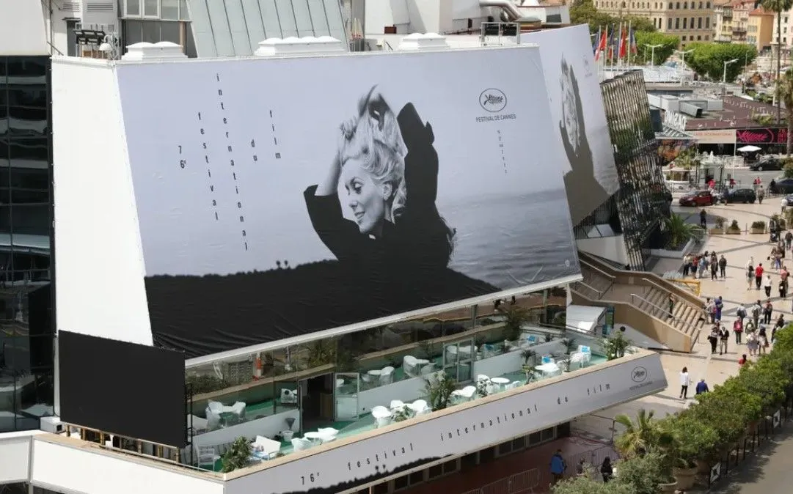

Post #1
Festival de Cannes é um festival de cinema criado em 1946, conforme concepção de Jean Zay, e até 2002 chamado Festival international du film, é um dos mais prestigiados e famosos festivais de cinema do mundo. Acontece todos os anos, no mês de maio, na cidade francesa de Cannes.